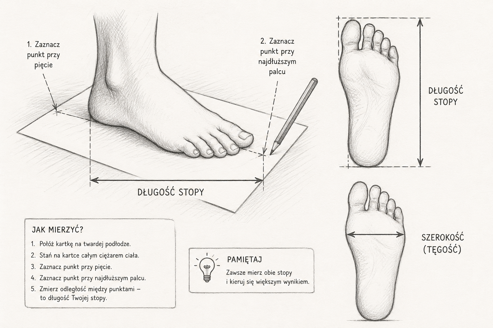

Dobór odpowiedniego rozmiaru obuwia ma ogromne znaczenie dla wygody, zdrowia stóp i trwałości samych butów. Zbyt małe obuwie może powodować ucisk, otarcia i ból, a zbyt duże sprawia, że stopa przesuwa się podczas chodzenia i nie ma właściwego podparcia.
Warto pamiętać, że rozmiar podany na pudełku nie zawsze mówi wszystko. Ten sam numer może różnić się w zależności od producenta, fasonu czy konstrukcji konkretnego modelu. Dlatego przy wyborze butów najlepiej kierować się nie tylko numerem EU, ale przede wszystkim rzeczywistymi wymiarami stopy i komfortem podczas przymierzania.
Jak prawidłowo zmierzyć stopę?
Najlepszym punktem wyjścia jest dokładny pomiar długości stopy. Połóż kartkę papieru na twardej podłodze, stań na niej całym ciężarem ciała, zaznacz najbardziej wysunięty punkt pięty oraz najdłuższego palca, a następnie zmierz odległość między tymi punktami.
Warto zmierzyć obie stopy, ponieważ bardzo często jedna jest nieco większa od drugiej. Przy wyborze obuwia należy kierować się większym wynikiem.

Kiedy najlepiej mierzyć stopę?
Stopa w ciągu dnia może lekko zmieniać swój rozmiar. Po kilku godzinach chodzenia zwykle jest nieco większa niż rano. Dlatego pomiar najlepiej wykonywać po południu lub wieczorem, szczególnie jeśli buty mają służyć do codziennego, długiego noszenia.
Mierz stopę w odpowiednich skarpetkach
Jeżeli planujesz nosić dane obuwie z grubszymi skarpetkami, warto mierzyć stopę właśnie w takich skarpetkach albo uwzględnić ten zapas podczas przymiarki. Dotyczy to szczególnie obuwia jesiennego, zimowego i sportowego.
Długość stopy a długość wkładki
To bardzo ważne rozróżnienie. Długość stopy nie zawsze powinna być identyczna z długością wkładki. But powinien pozostawiać niewielki zapas przed palcami, dzięki czemu stopa może pracować naturalnie podczas chodzenia.
W codziennym obuwiu dla dorosłych często pozostawia się około 5–10 mm zapasu, choć dokładna wartość zależy od fasonu, przeznaczenia i konstrukcji buta.
Nie liczy się tylko długość
Dwie osoby o tej samej długości stopy nie zawsze będą potrzebować tego samego modelu buta. Znaczenie mają również szerokość stopy, wysokość podbicia, kształt palców, szerokość pięty oraz fason i konstrukcja konkretnego modelu.
Dlatego może się zdarzyć, że but ma odpowiednią długość, a mimo to jest niewygodny.
Czym jest tęgość obuwia?
Tęgość obuwia określa, ile miejsca but daje stopie na szerokość i wysokość. Nie jest tym samym co rozmiar.
Dwie osoby mogą mieć stopę długości 25 cm i nosić ten sam rozmiar EU, ale jedna będzie potrzebowała buta węższego, a druga szerszego. Na tęgość wpływają przede wszystkim szerokość przodostopia, obwód stopy oraz wysokość podbicia.
Jeżeli but ma odpowiednią długość, ale uciska po bokach lub na podbiciu, problemem nie zawsze jest za mały numer. Bardzo często oznacza to po prostu, że dany model ma zbyt małą tęgość.
Najczęściej spotykane oznaczenia tęgości
- F – stopa węższa,
- G – standardowa lub średnia tęgość,
- H – stopa szersza,
- J / K – modele przeznaczone dla bardzo szerokiej stopy.
Nie istnieje jednak jeden identyczny system stosowany przez wszystkich producentów. Oznaczenia mogą różnić się między markami, dlatego litery należy traktować jako wskazówkę, a nie absolutny standard.
Po czym poznać, że rozmiar jest właściwy?
Dobrze dobrane buty powinny stabilnie trzymać piętę, nie uciskać palców, dawać lekki zapas z przodu, nie powodować silnego ucisku po bokach i nie przesuwać się nadmiernie podczas chodzenia.
Po założeniu butów warto chwilę w nich pochodzić. Palce powinny mieć swobodę ruchu, pięta nie powinna wysuwać się przy każdym kroku, a podbicie nie powinno być nadmiernie uciskane.
Zawsze przymierz oba buty
Nie należy oceniać rozmiaru tylko na jednej stopie. Zawsze warto przymierzyć oba buty, dobrze je zasznurować lub zapiąć i przejść się kilka kroków. To prosty sposób, by szybciej wychwycić niewygodę, której nie czuć od razu po wsunięciu stopy.
Co zrobić, gdy jesteś pomiędzy dwoma rozmiarami?
Jeśli mniejszy rozmiar wyraźnie uciska palce, zwykle lepiej wybrać większy. Jeżeli większy jest tylko nieznacznie za luźny, często można poprawić dopasowanie odpowiednią wkładką do obuwia.
Dodatkowa wkładka, zależnie od jej grubości, może zmniejszyć odczuwalną przestrzeń wewnątrz buta mniej więcej o pół numeru i ograniczyć przesuwanie się stopy. Trzeba jednak pamiętać, że wkładka nie naprawi źle dobranego kształtu lub tęgości — w takim przypadku lepiej wybrać inny model.
Orientacyjna tabela rozmiarów
Przy zakupie butów pomocna może być tabela rozmiarów, szczególnie jeśli podaje długość stopy w centymetrach. To często bardziej praktyczne niż sam numer EU.
| Długość stopy | EU | UK | US damskie | US męskie |
|---|---|---|---|---|
| 22,0 cm | 35 | 2,5 | 5 | 3,5 |
| 22,5 cm | 36 | 3 | 5,5 | 4 |
| 23,0 cm | 37 | 4 | 6 | 5 |
| 23,5 cm | 38 | 5 | 7 | 6 |
| 24,0 cm | 38,5 | 5,5 | 7,5 | 6,5 |
| 24,5 cm | 39 | 6 | 8 | 7 |
| 25,0 cm | 40 | 6,5 | 8,5 | 7,5 |
| 25,5 cm | 41 | 7,5 | 9,5 | 8,5 |
| 26,0 cm | 42 | 8 | 10 | 9 |
| 26,5 cm | 42,5 | 8,5 | 10,5 | 9,5 |
| 27,0 cm | 43 | 9 | 11 | 10 |
| 27,5 cm | 44 | 10 | 12 | 11 |
| 28,0 cm | 45 | 10,5 | 12,5 | 11,5 |
| 28,5 cm | 45,5 | 11 | 13 | 12 |
| 29,0 cm | 46 | 11,5 | 13,5 | 12,5 |
| 29,5 cm | 47 | 12 | 14 | 13 |
| 30,0 cm | 48 | 13 | 15 | 14 |
Dobry rozmiar to taki, o którym zapominasz
Prawidłowo dobrane buty nie powinny wymagać ciągłego poprawiania, zaciskania palców ani przyzwyczajania się do ucisku. Powinny stabilnie trzymać stopę, pozostawiać palcom odpowiednią przestrzeń i pozwalać na naturalny ruch podczas chodzenia.
Dlatego numer na pudełku traktuj jako wskazówkę, a nie ostateczną odpowiedź. Najważniejsze są rzeczywiste wymiary stopy, konstrukcja konkretnego modelu i komfort podczas przymiarki.